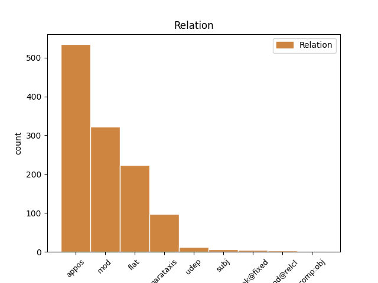

Distribution of features within this leaf


Agreement Rules sorted by frequency.
- When the dependent token is the appositional modifier(appos) of the head token, and the head token is NOUN
1 Sus _ _ _ _ 0 _ _ _
2 Antigoon _ _ _ _ 0 _ _ _
3 - _ _ _ _ 0 _ _ _
4 Bet-bet-bet-bet-betovergrootvader _ _ _ _ 0 _ _ _
5 van _ _ _ _ 0 _ _ _
6 Suske _ _ _ _ 0 _ _ _
7 en _ _ _ _ 0 _ _ _
8 de _ _ _ _ 0 _ _ _
9 ontdekker _ _ _ _ 0 _ _ _
10 van _ _ _ _ 0 _ _ _
11 het _ _ _ _ 0 _ _ _
12 eiland eiland NOUN N|soort|ev|basis|onz|stan Gender=Neut|Number=Sing 0 _ _ _
13 Amoras Amoras PROPN N|eigen|ev|basis|onz|stan Gender=Neut|Number=Sing 12 appos _ SpaceAfter=No
14 . _ _ _ _ 0 _ _ _
1 Toen _ _ _ _ 0 _ _ _
2 echter _ _ _ _ 0 _ _ _
3 Wiske _ _ _ _ 0 _ _ _
4 in _ _ _ _ 0 _ _ _
5 het _ _ _ _ 0 _ _ _
6 album album NOUN N|soort|ev|basis|onz|stan Gender=Neut|Number=Sing 0 _ _ _
7 « _ _ _ _ 0 _ _ _
8 De _ _ _ _ 0 _ _ _
9 koeiencommissie _ _ _ _ 0 _ _ _
10 » _ _ _ _ 0 _ _ _
11 ( _ _ _ _ 0 _ _ _
12 nr nummer NOUN N|soort|ev|basis|onz|stan Gender=Neut|Number=Sing 6 mod _ _
13 268 _ _ _ _ 0 _ _ _
14 - _ _ _ _ 0 _ _ _
15 december _ _ _ _ 0 _ _ _
16 2001 _ _ _ _ 0 _ _ _
17 ) _ _ _ _ 0 _ _ _
18 een _ _ _ _ 0 _ _ _
19 naveltruitje _ _ _ _ 0 _ _ _
20 en _ _ _ _ 0 _ _ _
21 een _ _ _ _ 0 _ _ _
22 korte _ _ _ _ 0 _ _ _
23 rok _ _ _ _ 0 _ _ _
24 aankreeg _ _ _ _ 0 _ _ _
25 , _ _ _ _ 0 _ _ _
26 kwamen _ _ _ _ 0 _ _ _
27 er _ _ _ _ 0 _ _ _
28 luide _ _ _ _ 0 _ _ _
29 protesten _ _ _ _ 0 _ _ _
30 . _ _ _ _ 0 _ _ _
1 Chinees Chinees PROPN N|eigen|ev|basis|zijd|stan Gender=Com|Number=Sing 0 _ _ _
2 ( _ _ _ _ 0 _ _ _
3 Versie versie NOUN N|soort|ev|basis|zijd|stan Gender=Com|Number=Sing 1 mod _ _
4 vasteland _ _ _ _ 0 _ _ _
5 ) _ _ _ _ 0 _ _ _
6 : _ _ _ _ 0 _ _ _
7 Bo _ _ _ _ 0 _ _ _
8 bu _ _ _ _ 0 _ _ _
9 & _ _ _ _ 0 _ _ _
10 Bo _ _ _ _ 0 _ _ _
11 be _ _ _ _ 0 _ _ _
12 te _ _ _ _ 0 _ _ _
1 Een _ _ _ _ 0 _ _ _
2 aparte _ _ _ _ 0 _ _ _
3 plaats _ _ _ _ 0 _ _ _
4 neemt _ _ _ _ 0 _ _ _
5 Schanulleke Schanulleke PROPN N|eigen|ev|basis|zijd|stan Gender=Com|Number=Sing 0 _ _ _
6 , _ _ _ _ 0 _ _ _
7 de _ _ _ _ 0 _ _ _
8 lappenpop lappenpop NOUN N|soort|ev|basis|zijd|stan Gender=Com|Number=Sing 5 appos _ _
9 van _ _ _ _ 0 _ _ _
10 Wiske _ _ _ _ 0 _ _ _
11 , _ _ _ _ 0 _ _ _
12 in _ _ _ _ 0 _ _ _
13 . _ _ _ _ 0 _ _ _
1 In _ _ _ _ 0 _ _ _
2 het _ _ _ _ 0 _ _ _
3 verhaal _ _ _ _ 0 _ _ _
4 treden _ _ _ _ 0 _ _ _
5 Tante tante NOUN N|soort|ev|basis|zijd|stan Gender=Com|Number=Sing 0 _ _ _
6 Sidonia Sidonia PROPN N|eigen|ev|basis|zijd|stan Gender=Com|Number=Sing 5 flat _ SpaceAfter=No
7 , _ _ _ _ 0 _ _ _
8 Wiske _ _ _ _ 0 _ _ _
9 , _ _ _ _ 0 _ _ _
10 en _ _ _ _ 0 _ _ _
11 haar _ _ _ _ 0 _ _ _
12 broer _ _ _ _ 0 _ _ _
13 Rikki _ _ _ _ 0 _ _ _
14 op _ _ _ _ 0 _ _ _
15 . _ _ _ _ 0 _ _ _
1 Tenslotte _ _ _ _ 0 _ _ _
2 is _ _ _ _ 0 _ _ _
3 er _ _ _ _ 0 _ _ _
4 een _ _ _ _ 0 _ _ _
5 jubileum-album _ _ _ _ 0 _ _ _
6 uitgebracht _ _ _ _ 0 _ _ _
7 getiteld _ _ _ _ 0 _ _ _
8 Suske Suske PROPN N|eigen|ev|basis|zijd|stan Gender=Com|Number=Sing 0 _ _ _
9 en _ _ _ _ 0 _ _ _
10 Wiske Wiske PROPN N|eigen|ev|basis|zijd|stan Gender=Com|Number=Sing 8 flat _ _
11 60 _ _ _ _ 0 _ _ _
12 jaar _ _ _ _ 0 _ _ _
13 ! _ _ _ _ 0 _ _ _
14 . _ _ _ _ 0 _ _ _
1 Gyronef Gyronef PROPN N|eigen|ev|basis|zijd|stan Gender=Com|Number=Sing 0 _ _ _
2 - _ _ _ _ 0 _ _ _
3 Helikopter helikopter NOUN N|soort|ev|basis|zijd|stan Gender=Com|Number=Sing 1 parataxis _ _
1 60-jaar 60-jaar NOUN N|soort|ev|basis|zijd|stan Gender=Com|Number=Sing 0 _ _ _
2 viering viering NOUN N|soort|ev|basis|zijd|stan Gender=Com|Number=Sing 1 parataxis _ _
1 Zone Zone NOUN N|soort|ev|basis|zijd|stan Gender=Com|Number=Sing 0 _ _ _
2 Stad stad NOUN N|soort|ev|basis|zijd|stan Gender=Com|Number=Sing 1 unk@fixed _ SpaceAfter=No
3 , _ _ _ _ 0 _ _ _
4 reeks _ _ _ _ 0 _ _ _
5 3 _ _ _ _ 0 _ _ _
1 hoofdinspecteur _ _ _ _ 0 _ _ _
2 van _ _ _ _ 0 _ _ _
3 politie _ _ _ _ 0 _ _ _
4 met _ _ _ _ 0 _ _ _
5 specialiteit specialiteit NOUN N|soort|ev|basis|zijd|stan Gender=Com|Number=Sing 6 subj _ _
6 politieassistent politieassistent NOUN N|soort|ev|basis|zijd|stan Gender=Com|Number=Sing 0 _ _ _
7 ( _ _ _ _ 0 _ _ _
8 HINP _ _ _ _ 0 _ _ _
9 PA _ _ _ _ 0 _ _ _
10 ) _ _ _ _ 0 _ _ _
1 Ons _ _ _ _ 0 _ _ _
2 openbaar _ _ _ _ 0 _ _ _
3 kunstbezit kunstbezit NOUN N|soort|ev|basis|onz|stan Gender=Neut|Number=Sing 0 _ _ _
4 , _ _ _ _ 0 _ _ _
5 waaronder _ _ _ _ 0 _ _ _
6 het _ _ _ _ 0 _ _ _
7 « _ _ _ _ 0 _ _ _
8 Lam lam NOUN N|soort|ev|basis|onz|stan Gender=Neut|Number=Sing 3 mod@relcl _ _
9 Gods _ _ _ _ 0 _ _ _
10 » _ _ _ _ 0 _ _ _
11 , _ _ _ _ 0 _ _ _
12 krijgt _ _ _ _ 0 _ _ _
13 dankzij _ _ _ _ 0 _ _ _
14 het _ _ _ _ 0 _ _ _
15 gecentraliseerd _ _ _ _ 0 _ _ _
16 beeldbeheer _ _ _ _ 0 _ _ _
17 er _ _ _ _ 0 _ _ _
18 een _ _ _ _ 0 _ _ _
19 pak _ _ _ _ 0 _ _ _
20 gadgets _ _ _ _ 0 _ _ _
21 bij _ _ _ _ 0 _ _ _
22 . _ _ _ _ 0 _ _ _
1 Maar _ _ _ _ 0 _ _ _
2 dit _ _ _ _ 0 _ _ _
3 was _ _ _ _ 0 _ _ _
4 op _ _ _ _ 0 _ _ _
5 ontoereikende _ _ _ _ 0 _ _ _
6 wijze _ _ _ _ 0 _ _ _
7 gebeurd _ _ _ _ 0 _ _ _
8 , _ _ _ _ 0 _ _ _
9 en _ _ _ _ 0 _ _ _
10 Blücher _ _ _ _ 0 _ _ _
11 kon _ _ _ _ 0 _ _ _
12 zijn _ _ _ _ 0 _ _ _
13 leger _ _ _ _ 0 _ _ _
14 hergroeperen _ _ _ _ 0 _ _ _
15 en _ _ _ _ 0 _ _ _
16 richting richting NOUN N|soort|ev|basis|zijd|stan Gender=Com|Number=Sing 17 udep _ _
17 Wellington Wellington PROPN N|eigen|ev|basis|zijd|stan Gender=Com|Number=Sing 0 _ _ _
18 trekken _ _ _ _ 0 _ _ _
19 . _ _ _ _ 0 _ _ _
1 Dirk _ _ _ _ 0 _ _ _
2 Holemans _ _ _ _ 0 _ _ _
3 was _ _ _ _ 0 _ _ _
4 een _ _ _ _ 0 _ _ _
5 tijdlang tijdlang NOUN N|soort|ev|basis|zijd|stan Gender=Com|Number=Sing 8 udep _ _
6 ' _ _ _ _ 0 _ _ _
7 politiek _ _ _ _ 0 _ _ _
8 secretaris secretaris NOUN N|soort|ev|basis|zijd|stan Gender=Com|Number=Sing 0 _ _ _
9 ' _ _ _ _ 0 _ _ _
10 , _ _ _ _ 0 _ _ _
11 als _ _ _ _ 0 _ _ _
12 opvolger _ _ _ _ 0 _ _ _
13 van _ _ _ _ 0 _ _ _
14 Jos _ _ _ _ 0 _ _ _
15 Geysels _ _ _ _ 0 _ _ _
16 . _ _ _ _ 0 _ _ _
1 De _ _ _ _ 0 _ _ _
2 echtgenoot echtgenoot NOUN N|soort|ev|basis|zijd|stan Gender=Com|Number=Sing 0 _ _ _
3 van _ _ _ _ 0 _ _ _
4 Prinses _ _ _ _ 0 _ _ _
5 Astrid _ _ _ _ 0 _ _ _
6 van _ _ _ _ 0 _ _ _
7 België _ _ _ _ 0 _ _ _
8 , _ _ _ _ 0 _ _ _
9 Lorenz Lorenz PROPN N|eigen|ev|basis|zijd|stan Gender=Com|Number=Sing 2 comp:obj _ SpaceAfter=No
10 , _ _ _ _ 0 _ _ _
11 « _ _ _ _ 0 _ _ _
12 Aartshertog _ _ _ _ 0 _ _ _
13 van _ _ _ _ 0 _ _ _
14 Oostenrijk-Este _ _ _ _ 0 _ _ _
15 » _ _ _ _ 0 _ _ _
16 kreeg _ _ _ _ 0 _ _ _
17 in _ _ _ _ 0 _ _ _
18 1995 _ _ _ _ 0 _ _ _
19 de _ _ _ _ 0 _ _ _
20 titel _ _ _ _ 0 _ _ _
21 van _ _ _ _ 0 _ _ _
22 « _ _ _ _ 0 _ _ _
23 Prins _ _ _ _ 0 _ _ _
24 van _ _ _ _ 0 _ _ _
25 België _ _ _ _ 0 _ _ _
26 » _ _ _ _ 0 _ _ _
27 waardoor _ _ _ _ 0 _ _ _
28 hun _ _ _ _ 0 _ _ _
29 kinderen _ _ _ _ 0 _ _ _
30 ook _ _ _ _ 0 _ _ _
31 deze _ _ _ _ 0 _ _ _
32 familienaam _ _ _ _ 0 _ _ _
33 dragen _ _ _ _ 0 _ _ _
34 . _ _ _ _ 0 _ _ _
Disagree Examples:
1 Het _ _ _ _ 0 _ _ _
2 Klein _ _ _ _ 0 _ _ _
3 en _ _ _ _ 0 _ _ _
4 het _ _ _ _ 0 _ _ _
5 Groot _ _ _ _ 0 _ _ _
6 Begijnhof _ _ _ _ 0 _ _ _
7 ( _ _ _ _ 0 _ _ _
8 dit _ _ _ _ 0 _ _ _
9 laatste _ _ _ _ 0 _ _ _
10 is _ _ _ _ 0 _ _ _
11 UNESCO UNESCO PROPN N|eigen|ev|basis|zijd|stan Gender=Com|Number=Sing 12 mod _ _
12 werelderfgoed werelderfgoed NOUN N|soort|ev|basis|onz|stan Gender=Neut|Number=Sing 0 _ _ _
13 ID _ _ _ _ 0 _ _ _
14 855-003 _ _ _ _ 0 _ _ _
15 ) _ _ _ _ 0 _ _ _
1 Het _ _ _ _ 0 _ _ _
2 stadhuis _ _ _ _ 0 _ _ _
3 met _ _ _ _ 0 _ _ _
4 een _ _ _ _ 0 _ _ _
5 flamboyant-gotische _ _ _ _ 0 _ _ _
6 gevel _ _ _ _ 0 _ _ _
7 en _ _ _ _ 0 _ _ _
8 oudere _ _ _ _ 0 _ _ _
9 Lakenhal _ _ _ _ 0 _ _ _
10 met _ _ _ _ 0 _ _ _
11 Belfort _ _ _ _ 0 _ _ _
12 ( _ _ _ _ 0 _ _ _
13 dit _ _ _ _ 0 _ _ _
14 ouder _ _ _ _ 0 _ _ _
15 gebouw _ _ _ _ 0 _ _ _
16 is _ _ _ _ 0 _ _ _
17 UNESCO UNESCO PROPN N|eigen|ev|basis|zijd|stan Gender=Com|Number=Sing 18 mod _ _
18 werelderfgoed werelderfgoed NOUN N|soort|ev|basis|onz|stan Gender=Neut|Number=Sing 0 _ _ _
19 ID _ _ _ _ 0 _ _ _
20 943-015 _ _ _ _ 0 _ _ _
21 ) _ _ _ _ 0 _ _ _
1 Het _ _ _ _ 0 _ _ _
2 Speelgoedmuseum _ _ _ _ 0 _ _ _
3 : _ _ _ _ 0 _ _ _
4 herbergt _ _ _ _ 0 _ _ _
5 een _ _ _ _ 0 _ _ _
6 unieke _ _ _ _ 0 _ _ _
7 collectie collectie NOUN N|soort|ev|basis|zijd|stan Gender=Com|Number=Sing 0 _ _ _
8 oud _ _ _ _ 0 _ _ _
9 en _ _ _ _ 0 _ _ _
10 hedendaags _ _ _ _ 0 _ _ _
11 speelgoed speelgoed NOUN N|soort|ev|basis|onz|stan Gender=Neut|Number=Sing 7 mod _ SpaceAfter=No
12 . _ _ _ _ 0 _ _ _
1 Spoorwegmuseum _ _ _ _ 0 _ _ _
2 De _ _ _ _ 0 _ _ _
3 Mijlpaal _ _ _ _ 0 _ _ _
4 vzw _ _ _ _ 0 _ _ _
5 : _ _ _ _ 0 _ _ _
6 dit _ _ _ _ 0 _ _ _
7 museum _ _ _ _ 0 _ _ _
8 schetst _ _ _ _ 0 _ _ _
9 het _ _ _ _ 0 _ _ _
10 ontstaan _ _ _ _ 0 _ _ _
11 en _ _ _ _ 0 _ _ _
12 de _ _ _ _ 0 _ _ _
13 ontwikkeling _ _ _ _ 0 _ _ _
14 van _ _ _ _ 0 _ _ _
15 spoorwegen _ _ _ _ 0 _ _ _
16 alsook _ _ _ _ 0 _ _ _
17 de _ _ _ _ 0 _ _ _
18 invloed _ _ _ _ 0 _ _ _
19 ervan _ _ _ _ 0 _ _ _
20 op _ _ _ _ 0 _ _ _
21 de _ _ _ _ 0 _ _ _
22 stad stad NOUN N|soort|ev|basis|zijd|stan Gender=Com|Number=Sing 0 _ _ _
23 Mechelen Mechelen PROPN N|eigen|ev|basis|onz|stan Gender=Neut|Number=Sing 22 appos _ SpaceAfter=No
24 . _ _ _ _ 0 _ _ _
1 Technopolis Technopolis PROPN N|eigen|ev|basis|onz|stan Gender=Neut|Number=Sing 0 _ _ _
2 : _ _ _ _ 0 _ _ _
3 wetenschap _ _ _ _ 0 _ _ _
4 doen _ _ _ _ 0 _ _ _
5 . _ _ _ _ 0 _ _ _
6 website website NOUN N|soort|ev|basis|zijd|stan Gender=Com|Number=Sing 1 parataxis _ SpaceAfter=No
7 : _ _ _ _ 0 _ _ _
8 http://www.technopolis.be _ _ _ _ 0 _ _ _